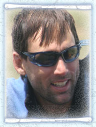
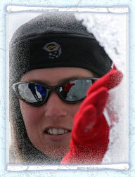
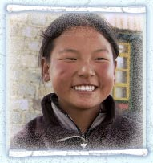
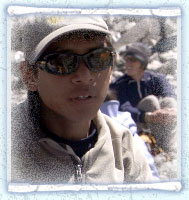
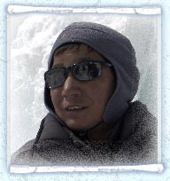
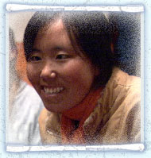
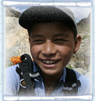
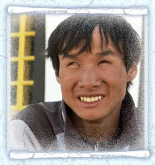

|  |
World-Class Blind Adventurer
“When someone describes a beautiful scene to me I can translate that into a sense of beauty. What I like is that somebody took the time to describe what’s moved them, and I feel a great connection to that person then.” — Erik
On May 25, 2001, Erik Weihenmayer became the first blind man in history to reach the summit of Mount Everest, the world’s highest peak. And on September 5, 2002, when he stood on top of Mt. Kosciusko in Australia, Weihenmayer completed his 7-year quest to climb the Seven Summits — the highest mountains on each of the seven continents, joining only 150 mountaineers ever to do so, all of them sighted.
Shortly after losing his sight at the age of twelve, Erik lost his mother in a tragic car accident. In an effort to strengthen the family during this difficult time, Erik’s father, an ex–Marine, took his three teenage sons on climbing trips to the far reaches of the globe including South America, India and Nepal. While awkward at first, Erik persevered and has emerged today as one of the most exciting and respected athletes in the world. In addition to climbing, Erik is also an acrobatic skydiver, long distance cyclist, snow skier, para–glider and marathon runner
Erik’s extraordinary accomplishments have gained him abundant press coverage including repeated visits to NBC’s Today Show and Nightly News, Oprah, Good Morning America, and the Tonight Show. He has also been featured on the cover of Time magazine and in Sports Illustrated, People, and Men’s Journal.
Erik has won a wide variety of prestigious awards and has been responsible for raising millions of dollars for blind organizations and other worthy causes in the United States and around the world. In a recent poll, Erik was named as one of the 20 most inspirational people in America.
|

|  |
“A lot of people say I can’t do it because I’m blind, or I have red hair, or my feet are too big. Get the right team around you, don’t set boundaries and go for it.” — Sabriye
Blind since the age of 12, Sabriye was raised with the belief that blindness was more of a personality trait than a disability. The result is a woman who has transformed attitudes about the blind in some of the most remote places on the planet.
After creating the Braille text for the Tibetan language, Sabriye was determined to share the Braille text with the people of Tibet, many of whom believe blind people are possessed by demons. At the age of 26, she traveled on her own to Lhasa where she bought two horses, found a local Tibetan woman to join her and headed out into the frozen Himalayas to find blind kids to attend a school she was setting up for them.
She found children who had been shunned by their parents, spurned by their villages, hidden away and tied to beds in dark rooms for years, some of them had never been taught to walk.
Today, thanks to the work of Sabriye and her partner Paul Kronenberg and their project Braille Without Borders, the perception of blindness in Tibet is being transformed.
During these travels, Sabriye met her partner Paul Kronenberg with whom she established the first school for the blind in Tibet and their organization Braille Without Borders.
Their students are taught how to read, write and speak in three languages; Tibetan, Chinese and English and are given the tools needed to live independently. After 9 years, the first of her students are graduating, establishing businesses and becoming the principal breadwinners for their families.
Their groundbreaking work has been recognized internationally as a model for schools for the visually impaired in developing countries.
They are establishing a new project in Kerala, India where they are training both sighted and blind people to establish satellite projects for the blind around the world.
Sabriye is a Nobel Peace Prize Nominee, Mother Theresa Award recipient and Oprah’s personal choice on her show “Eight Women Oprah Wants You To Know.”
|

|
Sonam Bhumtso 'One Hundred Thousand Beautiful Lakes’
Sonam Bhumtso, 15 years old — after joining Braille Without Borders’ school in 2000 she became one of the first blind students to be integrated into a sighted elementary school. She recently graduated first in her class from her sighted middle school. She speaks English, Chinese and Tibetan.
FOLLOWING THE FILM: After graduation from high school, her ambition is to go to university, and become a writer of Tibetan history. This would make her the first blind university student ever from Tibet. |

|
Gyenshen‘Victory’
Gyenshen, 17 years old, became blind at the age of nine. His scholarship to attend a prestigious school in Beijing was revoked when he became blind at the age of nine. To add further insult, he was hidden in his home for four years out of shame by his parents. Gyenshen was rescued by Braille Without Borders and brought to the school in Lhasa.
FOLLOWING THE FILM: Gyenshen now reads, speaks and writes in Tibetan, Chinese and English. He won a scholarship to study computers in Malaysia and Japan. He is now teaching computers and math at the Braille Without Borders school in Lhasa. He is also now the only Braille publisher in Tibet. |

|
Dachung ‘Little Moon’
Dachung, 14 years old, joined the school in 2001. He has learned to speak and write in Chinese and Tibetan. Dachung says “When I climb I can show that blind people can do the same as sighted people can do. I am also sure that I can climb a mountain very well. I have no fear.”
FOLLOWING THE FILM: Dachung won a scholarship to study massage and computers in Beijing. He has now returned to Lhasa to continue his studies at the Braille Without Borders farm in Shigatse. He plans to work at the Medical Massage clinic run by Tashi and Tenzin now in Lhasa. His ambition is to create his own business, make lots of money and help other blind children like himself to overcome the challenges of being blind. |

|
Kyila‘Happy’
Kyila, 18 years old. Most of Kyila’s family, including her father and her twin brothers, are blind. Originally from Lhatse and extremely poor, Kyila and her brothers joined the school in 1999. Her brothers have since returned home to make their own living. Kyila trained in the medical massage and physiotherapy program and established the first medical massage clinic in Tibet.
FOLLOWING THE FILM: Kyila won a scholarship to the United Kingdom to study English for a year and is now fluent in the language. She has returned to Lhasa and is now running the Braille Without Borders school.
|

|
Tenzin‘Keeper of the Buddha’s Teaching’
Tenzin, 15 years old, was very well accepted in his home village; the head of the village gave him the responsibility to herd the yaks, which greatly increased his self–confidence and self–esteem. Tenzin was the first child to join the school in 1998, and for two years he followed the preparatory school program. Tenzin speaks fluent Chinese and Tibetan, and his English is exceptional.
FOLLOWING THE FILM: Tenzin joined Tashi in the medical massage and physiotherapy training program. Together they are now running the biggest massage clinic in Lhasa. |

|
Tashi Pasang‘Lucky’
Tashi, 19 years old — Born in a remote village in China 1000 km away, Tashi was sold to a Chinese couple when he was 10 years old. They brought him to Lhasa to beg for them but when Tashi didn't make enough money, they tortured him. Tashi ran away, becoming an orphan fighting off other street kids who beat him up and stole his money. Tashi joined the school in 1999 and became a trained medical massage therapist. He speaks fluent Chinese and Tibetan and his English is extremely good.
FOLLOWING THE FILM: Tashi and Tenzin have now set up their medical massage clinic, and business is booming. |
|